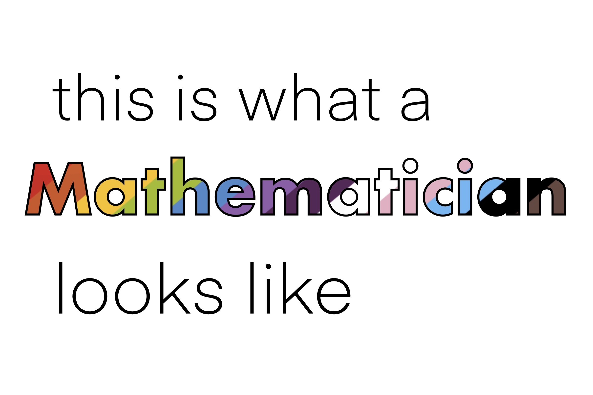
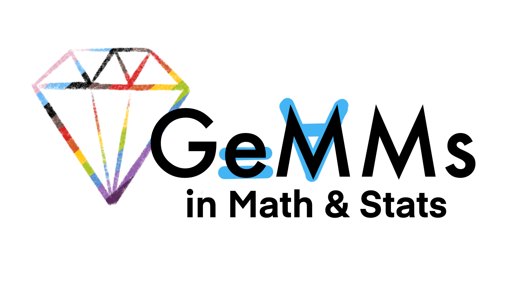

Teaching
Teaching Experience
I hold a bachelors degree in Educational Studies, with experience researching how to best support middle and high school teachers and students navigagte intigrating computer science and mathematics. As I am currently on fellowship, I am not teaching this quarter.
- Teaching Assistant: Swarthmore 2022 - general department clinician which involved hosting weekly help sessions for all levels of students.
- Teaching Assistant: Swarthmore 2020 - assisant for introductory calculus class, with in-class assistance and weekly help sessions.
- Grader: Swarthmore 2023 - graded for introductory differential equations.
Department Service
- 2023 UC Davis Graduate Program Collective: Applied Math Graduate Group student representative
- 2022 Heinrich W. Brinkmann Mathematics Prize recipient for outstanding performance in the field and exemplary services to the Department
- 2020-21, 2021-22 Board member of Swarthmore Gender Minorities in Math & Statistics
- 2021-22 Swarthmore Math and Statistics Student Advisory Council member
Math is for All
As I have grown as a mathematician and scientist, I have developed a deep commitment to making the world of science a more inclusive one, and I am working to achieve this goal through community building, education, and outreach. Please reach out if you would like to discuss any of the topics below more!
Stereotype Threat & Imposter Syndrome

Gender Minorities in Mathematics (GeMMs)

Todxs Cuentan - Every one of us counts
The axioms below are from the work of Dr. Federico Ardila-Mantilla, creating an equitable foundation for engaging in math. I came across these while I was trying to find my place in math, and they have helped me build productive, positive, and uplifting community spaces in math. I greatly admire Dr. Ardila-Mantilla's work and want to amplify his message. You can find the full article here, published through the American Mathematical Society.

Other resources on diversity, equity, and inclusion:
- Here you can find the site "Math is For All," sharing interviews on mathematician's personal journeys through the field.
- This is one of my favorite podcasts on mathematics, with Dr. Pamela E. Harris and Dr. Aris Winger sharing their expereinces navigating academia and mathematics.
- This publication from the American Mathematical Society shares the stories of challenges and resilience.